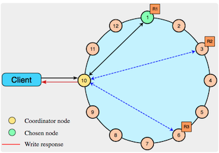
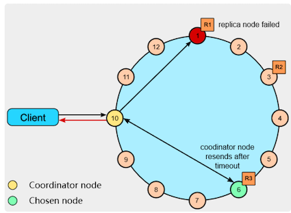
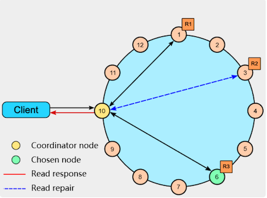
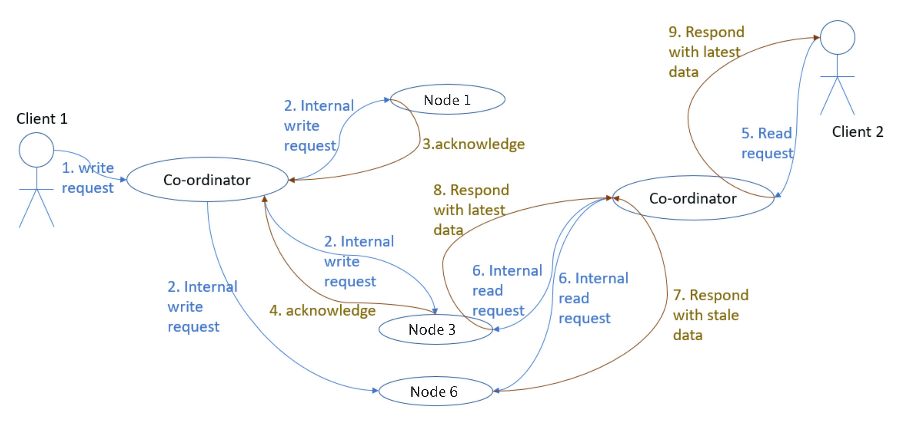
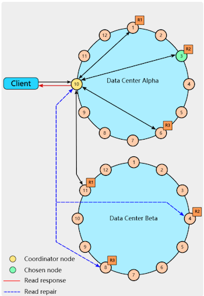

第四节 NWR算法修改读写模型以提升性能
数据库的扩展时，写请求仍然在操作中心化的 Master 单点，这在很多业务场景下都是不可接受的。这一讲将介绍对于无单点的去中心化系统非常有用的 NWR 算法，它可以灵活地平衡一致性与性能。
在单机上部署数据库，一旦性能到达瓶颈，我们可以基于 AKF Y 轴将读写分离，这样多个 Slave 从库将读操作分流后，写操作就可以独享 Master 主库的全部性能。
然而主库作为中心化的单点，一旦宕机，未及时同步到从库的数据就有可能丢失。而且，这一架构下，主库的故障还会导致整个系统瘫痪。
去中心化系统中没有“Master 主库”这一概念，数据存放在多个 Replication 冗余节点上，且这些节点间地位均等，所以没有单点问题。
为了保持强一致性，系统可以要求修改数据时，必须同时写入所有冗余节点，才能向客户端返回成功。但这样系统的可用性一定很成问题，毕竟大规模分布式系统中，出现故障是常态，写入全部节点的操作根本无法容错，任何 1 个节点宕机都会造成写操作失败。而且，同步节点过多也会导致写操作性能低下
NWR 算法提供了一个很棒的读写模型，可以解决上述问题。这里的“NWR”，是指在去中心化系统中将 1 份数据存放在 N 个节点上，每次操作时，写 W 个节点、读 R 个节点，只要调整 W、R 与 N 的关系，就能动态地平衡一致性与性能。
NWR 在 NoSQL 数据库中有很广泛的应用，比如 Amazon 的 Dynamo 和开源的 Cassandra，这些数据库往往跨越多个 IDC 数据中心，包含成千上万个物理机节点，适用于海量数据的存储与处理。
1、从鸽巢原理到 NWR 算法
NWR 算法是由鸽巢原理得来的：如果 10 只鸽子放入 9 个鸽巢，那么有 1 个鸽巢内至少有 2 只鸽子，这就是鸽巢原理
鸽巢原理告诉我们，只要哈希函数输入主键的值范围大于输出索引，出现冲突的概率就一定大于 0；只要存放元素的数量超过哈希桶的数量，就必然会发生冲突。
基于鸽巢原理，David K. Gifford 在 1979 年首次提出了Quorum 算法（参见《Weighted Voting for Replicated Data》论文），解决去中心化系统冗余数据的一致性问题。
而 Quorum 算法提出，如果冗余数据存放在 N 个节点上，且每次写操作成功写入 W 个节点（其他 N - W 个节点将异步地同步数据），而读操作则从 R 个节点中选择并读出正确的数据，只要确保 W + R > N，同 1 条数据的读、写操作就不能并发执行，这样客户端就总能读到最新写入的数据。特别是当 W > N/2 时，同 1 条数据的修改必然是顺序执行的。
这样，分布式系统就具备了强一致性，这也是 NWR 算法的由来。
比如，若 N 为 3，那么设置 W 和 R 为 2 时，在保障系统强一致性的同时，还允许 3 个节点中 1 个节点宕机后，系统仍然可以提供读、写服务，这样的系统具备了很高的可用性。
当然，R 和 W 的数值并不需要一致，如何调整它们，取决于读、写请求数量的比例。比如当 N 为 5 时，如果系统读多写少时，可以将 W 设为 4，而 R 设为 2，这样读操作的性能会更好。
NWR 算法最早应用在 Amazon 推出的Dynamo 数据库中，你可以参见 2007 年 Amazon 发表的《Dynamo: Amazon’s Highly Available Key-value Store》论文。
2008 年 Dynamo 的作者 Avinash Lakshman 跳槽到 FaceBook，开发了 Dynamo 的开源版数据库Cassandra，它是目前最流行的 NoSQL 数据库之一，在 Apple、Netflix、360 等公司得到了广泛的应用。想必你对 NWR 算法的很多细节并不清楚，那么接下来我们以 Cassandra 为例，看看 NWR 是如何应用在实际工程中的。
2、Cassandra 数据库是如何使用 NWR 算法的？
1 个 Cassandra 分布式系统可以由多个 IDC 数据中心、数万个服务器节点构成，这些节点间使用 RPC 框架通信
由于 Cassandra 推出时 gRPC 还没有诞生，因此它使用的是性能相对较低的 Thrift RPC 框架（Thrift 的优点是支持的开发语言更多）。
同时，Cassandra 虽然使用宽列存储模型（每行最多可以包含20 亿列数据），但数据的分布是基于行 Key 进行的，它和 Dynamo 一样使用了一致性哈希算法，将 Key 对应的数据存储在多个节点中
Cassandra 对客户端提供一种类 SQL 的CQL 语言，你可以使用下面这行 CQL 语句设定数据存储的冗余节点个数，也就是 NWR 算法中的 N（也称为 Replication Factor）：
CREATE KEYSPACE excalibur
WITH REPLICATION = {'class' : 'NetworkTopologyStrategy', 'dc1' : 3};
上面这行 CQL 语句设置了每行数据在数据中心 DC1 中存储 3 份冗余，即 N = 3，接下来我们通过下面的 CQL 语句，将读 R、写 W 的节点数都设置为 1：
cqlsh> CONSISTENCY ONE
Consistency level set to ONE.
cqlsh> CONSISTENCY
Current consistency level is ONE.
此时，Cassandra 的性能最高，但达成最终一致性的耗时最长，丢数据风险也最大。
如果业务上对丢失少量数据不太在意，可以采用这种模型。此时修改数据时，客户端会并发地向 3 个存储节点写入数据，但只要 1 个节点返回成功，Cassandra 就会向客户端返回写入成功，如下图所示：

系统由 12 个主机节点构成，由于数据采用一致性哈希算法分片，故构成了一个节点环。
其中，本次写入的数据被分布到 1、3、6 这 3 个节点中存储。客户端可以随机连接到系统中的任何一个节点访问 Cassandra，此时该节点被称为 Coordinator Node，由它根据 NWR 的值来选择一致性模型，访问存储节点。
再来看读取数据的流程。下图中，作为 Coordinator Node 的节点 10 首先试图读取节点 1 中的数据，但发现节点 1 已经宕机，于是改选节点 6 并获取到数据，由于 R = 1 于是立刻向客户端返回成功。

如果我们将 R、W 都设置成 2，这就满足了 R + W > N(3)的场景，此时系统具备了强一致性。
客户端读写数据时，必须有 2 个节点返回，才算操作成功。比如下图中读取数据时，只有接收到节点 1、节点 6 的返回，操作才算成功。

蓝色线叫做 Read repair，如果节点 3 上的数据不一致，那么本次读操作可以将它修复为正确的数据。说完正常场景，我们再来看当一个节点出现异常时，NWR 是如何保持强一致性的。
下图中，客户端 1 在第 2 步，同时向 3 个存储节点写入了数据，由于节点 1、3 返回成功，所以写入操作实际已经完成了，但是节点 6 由于网络故障，却一直没有收到 Coordinator Node 发来的写入操作。
在强一致性的约束下，客户端 2 在第 5 步发起的读请求，必须能获取到第 2 步写入的数据。然而，客户端 2 连接的 Coordinator Node 与客户端 1 不同，它选择了节点 3 和节点 6，这两个节点上的数据并不一致。
根据不同的 timestamp 时间戳，Coordinator Node 发现节点 3 上的数据才是最后写入的数据，因此选择其上的数据返回客户端。这也叫 Last-Write-Win 策略。

Cassandra 提供了一个简单的方法，用于设置读写节点数量都过半，满足强一致性的要求，如下所示：
cqlsh> CONSISTENCY QUORUM
Consistency level set to QUORUM.
cqlsh> CONSISTENCY
Current consistency level is QUORUM.
读取数据时，这 2 个 IDC 内必须由 4 个存储节点返回数据，才满足 QUORUM 一致性的要求。下图中，Coordinator Node 获取到了 IDC Alpha 中节点 1、3、6 的返回，以及 IDC Beta 中节点 11 的返回，就可以基于 timestamp 时间戳选择最新的数据返回客户端。而且 Coordinator Node 会并发地发起 Read repair，试图修复 IDC Beta 中可能存在不一致的节点 4 和 8。

Cassandra 还有许多一致性模型，比如 LOCAL_QUORUM 只要求本地 IDC 内有多数节点响应即可，而 EACH_QUORUM 则要求每个 IDC 内都必须有多数节点返回成功（注意，这与上图中 IDC Alpha 中有 3 个节点返回，而 IDC Beta 则只有 1 个节点返回的 QUORUM 是不同的）
3、本节小结
当鸽子的数量超过了鸽巢后，就要注定某一个鸽巢内一定含有两只以上的鸽子，同样的道理，只要读、写操作涉及的节点超过半数，就注定读写操作总包含一个含有正确数据的节点。NWR 算法将这一原理一般化为：只要读节点数 R + 写节点数 W > 存储节点数 N，特别是 W > N/2 时，就能使去中心的分布式系统获得强一致性。
支持上万节点的 Cassandra 数据库，就使用了 NWR 算法来保持一致性。当然，Cassandra 支持多种一致性模型，当你需要更强劲的性能时，你可以令 R + W < N，当业务变化导致需要增强系统的一致性时，你可以实时地修改 R、W。Cassandra 也支持跨数据中心部署，此时的一致性模型更为复杂，但仍然将 NWR 算法作为实现基础。